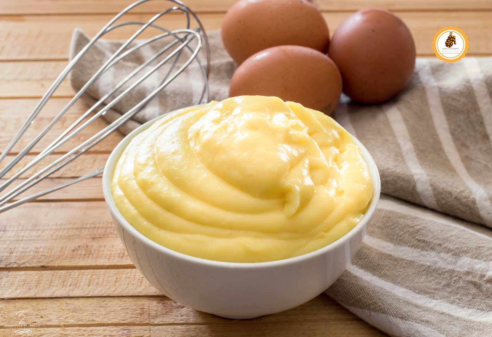

Crema pasticcera
Ingredienti
- 4 tuorli
- 4 cucchiai di zucchero
- 4 cucchiai di farina
- 750 ml di latte
Preparazione
1. In una ciotola, sbatti i tuorli con lo zucchero fino a ottenere un composto chiaro e spumoso.
2. Aggiungi gradualmente la farina setacciata, mescolando per evitare grumi.
3. Versa lentamente il latte a filo, continuando a mescolare per amalgamare bene gli ingredienti.
4. Trasferisci il composto in un pentolino e cuoci a fuoco lento, mescolando continuamente con una frusta o un cucchiaio di legno.
5. Continua a mescolare fino a che la crema si addensa e raggiunge la consistenza desiderata.
6. Raffreddamento: Una volta pronta, togli dal fuoco e lascia raffreddare, coprendo con pellicola trasparente a contatto per evitare che si formi la pellicina.